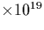
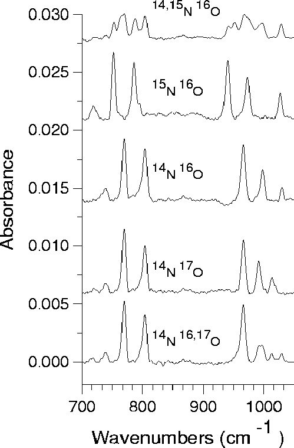

There were no reports of isotopic effects on the LVMs of the NNO
defect even though this information is of the greatest importance in
deducing its structure. Therefore concurrently with our theoretical
investigation, experimental IR studies were performed by Berg
Rasmussen et al [177]. Float-zone n-type Si
samples were implanted at room temperature with various combinations
of 16O, 17O, 14N and 15N, with a concentration of
6.5 cm-3 for both O and N. All samples were
annealed under flowing N2 ambient for an hour in the temperature
range from 500 to 650 C. Infrared absorption measurements
(shown in Figure 7.2) were carried out at 77 K. The
LVMs due to the NNO defect are given in Table 7.1.
C. Infrared absorption measurements
(shown in Figure 7.2) were carried out at 77 K. The
LVMs due to the NNO defect are given in Table 7.1.
|  |
The 14N frequencies agree with the earlier studies
[174,175,178], allowing for their shift ( 4 cm-1)
between low and room temperature. All the modes shift with 15N
showing that at least one N atom is involved in the defect.
Unexpectedly, the peak in the 1030 cm-1 LVM is shifted by around
3 cm-1 with 15N and this suggests that this mode is almost
entirely due to Si-O stretch. This lies between the LVMs for Oi
(1136 cm-1[179]) and Os (836 cm-1[77]),
suggesting that Oi bridges a dilated Si bond near the N-pair. The
modes at 999 and 805 cm-1 are slightly above those of an isolated
N-pair (967 and 770 cm-1) and show a similar shift with 15N
(25 and 19 cm-1 compared to 26 and 17 cm-1 for the N-pair),
suggesting that the pair remains intact but with compressed bonds due
to the nearby Oi. No additional LVMs are observed in the mixed
implantation, implying that the N atoms are no longer dynamically
coupled but vibrate independently of each other. They must also be
inequivalent atoms as they possess distinct LVMs. This implies that O
lies closer to one N atom than the other.
4 cm-1)
between low and room temperature. All the modes shift with 15N
showing that at least one N atom is involved in the defect.
Unexpectedly, the peak in the 1030 cm-1 LVM is shifted by around
3 cm-1 with 15N and this suggests that this mode is almost
entirely due to Si-O stretch. This lies between the LVMs for Oi
(1136 cm-1[179]) and Os (836 cm-1[77]),
suggesting that Oi bridges a dilated Si bond near the N-pair. The
modes at 999 and 805 cm-1 are slightly above those of an isolated
N-pair (967 and 770 cm-1) and show a similar shift with 15N
(25 and 19 cm-1 compared to 26 and 17 cm-1 for the N-pair),
suggesting that the pair remains intact but with compressed bonds due
to the nearby Oi. No additional LVMs are observed in the mixed
implantation, implying that the N atoms are no longer dynamically
coupled but vibrate independently of each other. They must also be
inequivalent atoms as they possess distinct LVMs. This implies that O
lies closer to one N atom than the other.